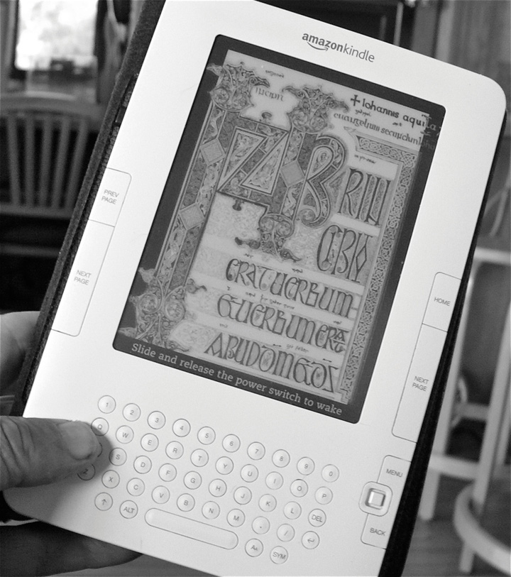

The final form of intellectual property (IP) protection is copyrightThe exclusive rights of authors to their respective works, to the exclusion of others.. Like patents and trademarks, federal law protects copyright. Whereas trade secrets protect confidential company information, patents protect processes and inventions, and trademarks protect brands and identity, copyright is designed to protect creativity. It is one of the two types of IP specifically mentioned in the Copyright Clause of the U.S. Constitution. Of course, back then the only works copyrighted would have been songs, art, or works in writing. Today, copyright extends to any form of creative expression, including digital forms.
If asked to write down four numbers from one to fifty in random sequence, most of us would write four different numbers. The process of picking those numbers requires creativity, so the sequence of the four numbers you write down is copyrighted. Note that the numbers themselves aren’t copyrighted, of course. It’s just the unique sequence that you choose, the expression of your creativity, that is copyrighted. Since computer software is a compilation of binary code expressed in 1 and 0, all software is copyrighted. On the other hand, sequential page numbers or listings in a phone directory show no creativity and are therefore not copyrightable. Similarly, if a group of students were given a camera and each was asked to photograph the same subject, each student would come up with a different photograph. Each student would frame the subject differently, and that is an expression of creativity. Finally, consider the notes that you take in class for this course. A group of students could read the same textbook and listen to the same lecture, and come up with different sets of notes. Each work is unique and demonstrates creativity, so each is copyrighted.
A work must be original (not copied) and fixed in a durable medium to be copyrighted. Therefore, if you sing an original song in the shower in the morning and your roommate hears it and records it, the copyright to the song belongs to your roommate, not you. This requirement exists because it would be impossible to prove, without a durable medium, who is the original author of a work. Ideas, by themselves, cannot be copyrighted. If you had an idea for a novel about a boy wizard who goes to a boarding school with his friends and battles evil monsters while growing up, that would not be copyrighted. If you wrote a novel featuring such a story line, however, you would run the risk of violating the copyrighted Harry Potter works. A similar dispute arose in 2006 after the blockbuster success of Dan Brown’s novel, “The Da Vinci Code.” Two authors, Michael Baigent and Richard Leigh, claimed the novel infringed on their copyrighted book, “Holy Blood Holy Grail.” In their book, the authors theorized that Jesus survived his crucifixion, married Mary Magdalene, and had children. The British judge hearing the case dismissed the claims, holding that the theory was “too general or too low a level of abstraction to be capable of protection by copyright law.”Baigent v. Random House Group, http://www.scribd.com/doc/2473519/da-vinci-code-ruling-baigent-v-rhg-0406 (accessed October 2, 2010).
A copyrighted work is automatically copyrighted upon its creation. Unlike patents and trademarks, which must go through an expensive and rigorous application and approval process with the government, authors do not need to send their work to the government for approval. Although it’s a good idea to write “Copyright” or place a © symbol on the work, it’s not legally required.
Copyright protection lasts for seventy years after the death of the author. If there is more than one author, the copyright expires seventy years after the death of the last surviving author. If a company, such as a publisher, owns a copyrighted work, the copyright expires ninety-five years from the date of publication, or one hundred twenty years from the date of creation, whichever comes first. After copyright expires, the work falls into the public domain. The works of Shakespeare, Bach, and Beethoven, for example, are in the public domain. They may be freely recorded, performed, or modified without permission. If you were to record yourself reciting Shakespeare’s “To be or not to be” speech from Hamlet, however, that recording is copyrighted even though the underlying work (Hamlet) is in the public domain as a new creative expression. Classical music recordings are similarly copyrighted under the same concept.
The owner of a copyright may allow members of the public to view or use a copyrighted work, for free or for a fee. This use is contained in a copyright license, sometimes called an End User License AgreementA contract between a copyright holder and user, typically used in software licenses. (EULA) for software. A license is essentially permission from the copyright holder to violate the copyright, within the terms of the license. When you purchase a physical book or CD or DVD, for example, the copyright license allows you to view the movie, listen to the music, or read the book, in private. The license does not allow you to show the movie in class to a broad audience, or to record the music into your computer and then modify it, or to run photocopies of the book to give away or sell. These rights of reproduction, exhibition, and sale are not part of the license you received and are reserved by the copyright holder. Of course, you may purchase those rights if you wish, but they will probably cost a lot more than the price of the book or disc. Some organizations advocate the creation of a common license that authors can easily refer to if they wish to distribute their work easily. The General Public License (GPL)A widely used free software license. for software and Creative CommonsA nonprofit organization dedicated to the free distribution of creative content, and publisher of several standard copyright licenses. (CC) license for text and media are well-known examples. One right that you do have, however, in spite of any language in the license, is the right of first saleDoctrine under which the first owner of a piece of copyrighted work can do whatever he or she pleases with it, including resell the work.. Essentially this means that as the owner of the physical work, you can do with it as you please, including resell the original work.
Licenses in the digital arena can be very restrictive if you purchase digital media. Copyright holders may use schemes such as Digital Rights Management (DRM)A scheme to restrict the ability of an end user to copy or modify digital media. to limit your ownership rights in digital media. DRM limits the number of copies and devices a digital file can be transferred to, and in some cases even permits the copyright holder to delete the purchased work. Amazon.com recently deleted digital George Orwell books from owners who had purchased the works for their Kindle reading devices (Figure 9.14 "Amazon’s Kindle E-reader"), without any prior notification. This would have been impossible if the books were in a physical form. Although Amazon.com was within its rights to do so, the public outcry that followed made Amazon.com promise to not engage in such behavior again in the future.
Figure 9.14 Amazon’s Kindle E-reader
Source: Photo courtesy of Larry Page, http://www.flickr.com/photos/igboo/3879913438.
Copyright infringement occurs when someone uses a copyrighted work without permission or violates the terms of a copyright license. For example, if a classmate takes your class notes without your permission and makes photocopies of them, the classmate has infringed on your copyright. It’s also copyright infringement if you take someone else’s work and simply repackage it as your own. This happened recently to Harry Potter author J. K. Rowling. Her books created a huge fan following, and many fans gather online to discuss the Potter series. One such site is the Harry Potter Lexicon, run by Steve Vander Ark, a former school librarian. The site serves as an encyclopedia to the Harry Potter world, with reference notes on characters, places, spells, and other details. When Vander Ark announced plans to publish the contents of the Lexicon in a book format, J. K. Rowling sued, claiming copyright infringement. The judge agreed and ordered the Lexicon rewritten so that it uses less material from the copyrighted work.
Copyright infringement also occurs when you assist someone in violating a copyright, or create a device that assists in violating a copyright. Thus, Web sites such as the former Napster and Grokster, which existed solely for the purpose of facilitating illegal downloading of music, were held to be infringers even though the Web sites themselves didn’t violate any copyrights. Similarly, if you make digital media available for download for others, you are not engaged in illegal downloading but still liable for contributory copyright infringement. The recording industry, which is battling for its very survival in a new file-sharing world, pursues these cases aggressively. In June 2009, a court in Minnesota ordered Jammie Thomas to pay $80,000 per song for making twenty-four songs available for download, for a total fine of $1.92 million. In September 2009, the industry won a $675,000 verdict against a college student in Massachusetts for file sharing thirty songs. Devices that can be used for purposes other than violating copyrights (such as photocopiers, video/DVD burners, and peer-to-peer networks used for sharing research) are not considered infringing devices.
Copyright law makes a distinction between “fair” use and “infringing” use of a copyrighted work. A fair use includes copying a work for purposes of commentary, criticism, news reporting, teaching, or research. Just because a work is used in a news article or in a classroom, however, does not make its use fair. The law provides four factors that courts must consider in determining whether or not the use is fair. First, the court must consider the purpose and character of the use. Is it for educational purpose, or for making a profit? Second, the court must consider the nature of the copyrighted work. Is the work part of the “core” of the intended protection that copyright provides? Third, the court must consider the amount and substantiality of the portion used. This is an important factor—it’s one thing for your professor to copy an excerpt from a journal or book for distribution in class (probably fair) and another to copy the entire journal or book (probably infringing). Finally, the court must consider the effect of the use on the potential market for the copyrighted work. If the use is considered fair, what would it do to the market for the copyrighted work? For example, if copying an entire textbook is fair, it would probably eliminate the market for new textbooks.
In an attempt to tackle the problem of copyright infringement on the Internet, Congress passed the Digital Millennium Copyright Act (DMCA)A federal law outlawing any attempt to circumvent a copy protection device or scheme. in 1998. One portion of the law helps Internet service providers by expressly stating that those providers can’t be sued for copyright infringement if others use their networks for infringing uses. Another portion of the law helps Web sites by stating that if a Web site user uploads infringing material and the Web site complies with a copyright holder’s request to remove the material, the Web site won’t be liable for infringement. For example, if you upload a portion of a copyrighted song, movie, or television show to YouTube, you may find that YouTube has removed your clip at the request of the copyright holder. Finally, the DMCA makes it illegal to attempt to disable a copy protection device. DVD and Blu-ray Discs, for example, are copy protected to prevent them from being copied easily. Anyone who writes software (even if the software is distributed for free) that disables this copy protection device is violating the DMCA. In recent years the DMCA has been used by companies to prevent competitors from making replacement inkjet cartridges, replacement garage door openers, and other replacement parts on the grounds that the replacements circumvent a copy protection device.
Copyright protects any creative work fixed in a tangible medium. Copyright protection is automatic without any prior government approval and generally lasts for seventy years past the death of the author. Copyright owners can license others to use their works while retaining full rights of ownership. Digital works are fully protected by copyright and may be encrypted with digital rights management schemes. Copyright infringement, both direct and contributory, is a serious civil violation that can result in heavy monetary penalties. Fair use is a defense to copyright infringement. The Digital Millennium Copyright Act prohibits any attempts to circumvent a copy protection device or scheme.